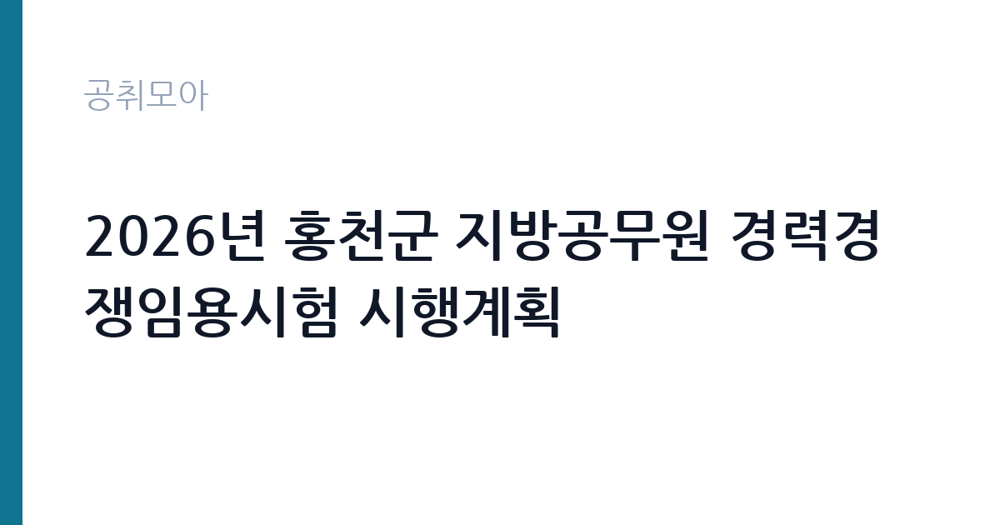

[지자체] 2026년 홍천군 지방공무원 경력경쟁임용시험 시행계획
강원특별자치도 홍천군 · 강원 · 마감 2026-10-23 (D-20) · 출처 나라일터

한눈에 보는 모집 조건
| 기관 | 강원특별자치도 홍천군 |
|---|---|
| 공고명 | 2026년 홍천군 지방공무원 경력경쟁임용시험 시행계획 |
| 고용형태 | 정규직 |
| 근무지 | 강원 |
| 게시일 | 2026-10-03 |
| 마감일 | 2026-10-23 (D-20) |
지원자격, 이렇게 읽으세요
- 지방시설서기보(토목) 4명 지방시설서기보(건축) 2명
- 접수 ~2026-10-23 마감
- 세부 조건은 원문 공고문 확인
경력경쟁임용은 공개경쟁과 달리 응시자격이 제한됩니다. 시설직은 통상 관련 학과 졸업이나 토목·건축 분야 기술자격증, 일정 기간 이상의 실무경력 중 하나를 요구합니다. 세부 요건은 홍천군 원문 공고문에서 확인하시기 바라며, 자격증은 접수 마감일까지 취득한 것만 인정되는 경우가 많으니 유효기간과 취득일을 미리 점검하시기 바랍니다. 문의처는 홍천군청 033-430-2213입니다.
이 공고의 포인트
기초지자체 시설직 9급은 정년보장 공무원 신분으로, 도로·하천·상하수도 같은 지역 기반시설 업무와 건축 인허가 업무를 맡습니다. 홍천군은 용문-홍천 철도, 양평-홍천 고속도로 등 광역교통망 확충과 귀농귀촌 인구 유입으로 개발 수요가 이어지는 지역이라 시설직의 실무 비중이 큽니다. 경력경쟁은 필기 부담이 공개경쟁보다 낮고, 전공·자격·경력을 무기로 쓸 수 있어 기술계 고졸·전문대졸에게도 문이 열려 있습니다.
전형은 어떻게 진행되나
경력경쟁임용은 서류전형에서 응시자격을 심사한 뒤 필기시험과 면접시험으로 합격자를 가립니다. 시설직 필기는 전공과목 중심으로 출제되며, 면접은 공무원으로서의 자세와 직무 이해도를 확인합니다. 정확한 시험 과목과 일정, 합격자 발표일은 원문 시행계획을 기준으로 준비하시기 바랍니다.
원문에서 확인한 전형 방식
○ 모집분야 : 시설직6명(토목4명, 건축2명) ○ 선발직급 : 9급 ○ 고용형태 : 일반직공무원 ○ 접수기간 : 2026년10월21일 ~ 2026년10월23일 ○ 자격요건 및 응시방법 : 공고문 참조 ○ 문의처 : 033-430-2213
이런 분께 추천해요
- 토목·건축 관련 학과 졸업자나 기술자격증 소지자
- 건설·설계·시공 현장 경력을 살려 공직에 진출하고 싶은 분
- 강원 지역 정착을 희망하며 정년보장 신분을 원하는 분
지원 전 체크리스트
- 원문 시행계획에서 응시자격(학력·자격·경력)을 확인했습니다
- 접수 기간 10월 21일부터 23일 사이에 접수할 수 있습니다
- 자격증 취득일과 경력증명서 발급 소요를 점검했습니다
- 시험 과목과 가산점 규정을 원문에서 확인했습니다
모집 일정과 제출 타이밍
접수 기간은 2026년 10월 21일부터 10월 23일까지이며, 최종 마감일은 10월 23일입니다. 이후 필기시험과 면접시험이 순차 진행되고 최종합격자가 발표됩니다. 세부 시험일과 장소는 원문 시행계획과 홍천군청 홈페이지 공고를 확인하시기 바랍니다. 접수 첫날과 마감일은 접속이 몰릴 수 있으니 여유 있게 접수하시기 바랍니다.
직무 이해하기: 지자체
지방시설서기보(토목)는 도로·교량·하천·상하수도 등 기반시설의 발주·감독·유지관리와 재난복구 업무를 맡습니다. 건축직은 건축 인허가와 착공·준공 검사, 불법건축물 단속, 공동주택 관리 업무를 수행합니다. 군 단위에서는 담당자가 설계서 검토부터 현장 감독, 민원 응대까지 폭넓게 맡아 실무 감각이 빠르게 느는 편입니다.
자기소개서 작성 팁
경력경쟁 서류와 면접에서는 전공 역량과 현장 경험이 핵심입니다. 다뤘던 공사의 규모와 본인의 역할, 도면·적산·공정관리 같은 실무 키워드를 구체적으로 쓰시기 바랍니다. 공직 지원동기는 막연한 안정 추구가 아니라, 기반시설로 주민 생활을 지킨다는 직무 연결로 풀어내는 것이 설득력이 있습니다.
면접 준비 포인트
면접에서는 기술직 공무원으로서의 안전의식과 민원 대응 자세를 확인합니다. 부실시공 발견 시 대처, 주민 민원 현장에서의 설명 방식, 청렴 의무 같은 질문이 단골입니다. 홍천군의 현안 사업 1개를 파악하고 시설직의 역할을 연결해 답변하면 좋은 평가를 받을 수 있습니다.
급여·근무조건 읽는 법
9급 공무원의 2026년 봉급표 기준 1호봉 기본급은 월 213만 3천 원 수준으로 정리된 바 있습니다. 여기에 정근수당, 초과근무수당, 정액급식비, 명절휴가비 등이 더해지며, 인사혁신처 발표에 따르면 2026년 9급 초임 보수는 기본급과 각종 수당을 합쳐 연간 약 3,428만 원, 월평균 약 286만 원 수준입니다(한경 보도 인용). 기본급과 수당, 상여를 구분하면 실제 체감 보수를 가늠할 수 있으며, 호봉이 오를수록 기본급이 상승합니다. 정확한 개인별 보수는 임용 후 호봉 획정으로 확정됩니다.
자주 묻는 질문
- 경력경쟁과 공개경쟁의 차이는 무엇인가요?
경력경쟁은 학력·자격·경력 등 일정 요건을 갖춘 사람만 응시할 수 있는 대신, 선발 인원이 적고 전공 중심으로 평가합니다. 공개경쟁보다 필기 과목 부담이 낮은 편입니다. - 기술자격증이 반드시 있어야 하나요?
응시자격은 공고마다 다르며, 학력이나 경력으로도 갈음되는 경우가 있습니다. 본 시험의 정확한 요건은 원문 시행계획에서 확인하시기 바랍니다. - 홍천 근무 시 주거 지원이 있나요?
관사나 주거 지원 여부는 지자체별로 다르며 공고문에 명시되지 않은 경우 해당 부서에 문의하시는 것이 정확합니다. 홍천군청 인사부서 033-430-2213으로 확인하시기 바랍니다.
함께 보면 좋은 공고
[지자체] 제주특별자치도 임기제공무원 임용시험 시행계획 공고(시민고충처리위원회 고충민원전문조사관 분야) — 마감 2026-10-19[지자체] 2026년 제9회 대전광역시 동구 지방임기제공무원 채용시험 시행계획 공고(기록물관리 전문요원) — 마감 2026-10-14[지자체] 시간선택제임기제공무원[마급]보건행정 채용 공고 — 마감 2026-10-07출처: 나라일터 공개정보를 바탕으로 공취모아가 정리한 안내글입니다. 모집 조건·일정은 변경될 수 있으니 지원 전 반드시 원문 공고문을 확인하세요. 본 글은 정보 제공용이며 합격을 보장하지 않습니다.